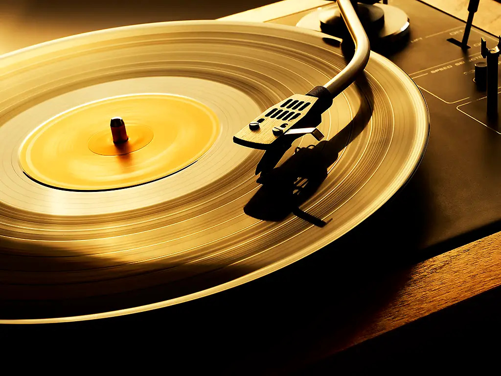

Did somebody say vinyls?
Best Records is, according to some vinyl nerds, the best record store in Munich. Since we’re skipping rankings here, more about the owner: Christoph Best has an enormous knowledge of music and gladly shares it with anyone interested. Twenty-three years ago, he traded his job as a journalist and retail salesman for an organized chaos of over 200,000 records—and hasn’t regretted it for a single second.
Back